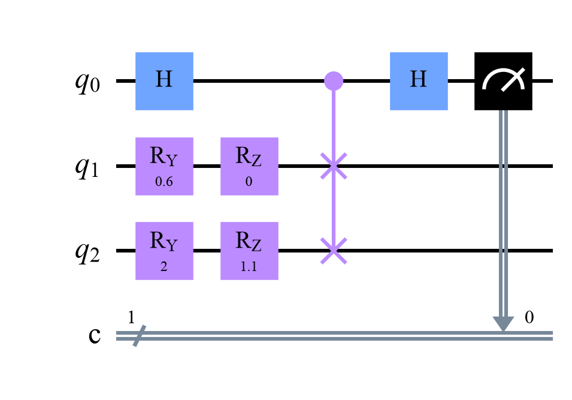

fidelity F = 0.4447; P(ancilla = 0) = 0.7224; (1 + F)/2 = 0.7224

A quantum computer can't print amplitudes, but two clever circuits turn the overlap of two states into the probability of a measurement. This is how quantum kernels are measured.

Next week's quantum kernels need one number for every pair of data points: the fidelity of their encoded states. On a simulator we just compute it. On hardware, the states are sealed envelopes: we can't read their amplitudes. Yet a small circuit can tell how alike two of them are.
The swap test. Put and on two registers, add one ancilla qubit, and run: H on the ancilla, a SWAP of the two registers controlled by the ancilla, H again, measure the ancilla. Then
Why: the ancilla puts the pair in a superposition of "swapped" and "not swapped", and the final H makes the two branches interfere. Identical states are unchanged by the swap, so the ancilla always reads 0; orthogonal states give a fair coin. The beauty: it works for any two states, even ones handed to you by a quantum sensor, without knowing how they were made.
The inversion test (compute–uncompute). If you know the circuits, it's cheaper: prepare , then run (the circuit backwards). The probability of reading all zeros is
No extra qubits and no controlled SWAPs, only a circuit twice as deep. This is how quantum-kernel experiments usually measure their kernels.
Shots. Both give a probability, estimated from shots with a wobble of about . The swap test computes , which magnifies that wobble. And a kernel matrix needs one estimate per pair of points: for 100 points, about 5,000 circuits, each with thousands of shots.
Fidelity becomes a probability: swap test for any two states, inversion test when you know their circuits, and a shot bill for every pair.
Choose two states. The ancilla's chance of reading 0 is (1 + F)/2. Then estimate F 300 times with each test, from shots.
Make the two arrows identical: P(0) = 1. Make them opposite: P(0) = 0.5, never lower. Then race the tests: the inversion test's estimates huddle closer to the truth. With 100 shots, how wide is the swap test's spread?
qml-w1d5.ipynb. To change the code and run it yourself, open the notebook in Google Colab (free, in your browser) or download it for your own Jupyter.import numpy as np
from qiskit import QuantumCircuit
from qiskit.quantum_info import Statevector, state_fidelity
from qiskit.primitives import StatevectorSampler
def prep(theta, phi):
qc = QuantumCircuit(1)
qc.ry(theta, 0)
qc.rz(phi, 0)
return qc
def swap_test(a, b):
qc = QuantumCircuit(3, 1)
qc.compose(a, [1], inplace=True) # psi on qubit 1
qc.compose(b, [2], inplace=True) # phi on qubit 2
qc.h(0) # the ancilla
qc.cswap(0, 1, 2)
qc.h(0)
qc.measure(0, 0)
return qc
psi, phi = prep(0.6, 0.0), prep(2.0, 1.1)
F = state_fidelity(Statevector(psi), Statevector(phi))
p0 = Statevector(swap_test(psi, phi).remove_final_measurements(inplace=False)).probabilities([0])[0]
print(f"fidelity F = {F:.4f}; P(ancilla = 0) = {p0:.4f}; (1 + F)/2 = {(1 + F) / 2:.4f}")
swap_test(psi, phi).draw("mpl", style="clifford")fidelity F = 0.4447; P(ancilla = 0) = 0.7224; (1 + F)/2 = 0.7224

sampler = StatevectorSampler(seed=1)
for shots in [100, 1000, 10000]:
counts = sampler.run([swap_test(psi, phi)], shots=shots).result()[0].data.c.get_counts()
print(f"{shots:6d} shots: F estimate {2 * counts.get('0', 0) / shots - 1:.4f} (exact {F:.4f})")100 shots: F estimate 0.3600 (exact 0.4447) 1000 shots: F estimate 0.4160 (exact 0.4447) 10000 shots: F estimate 0.4368 (exact 0.4447)
def zz_map(x, reps=2):
qc = QuantumCircuit(2)
for _ in range(reps):
qc.h([0, 1])
qc.p(2 * x[0], 0)
qc.p(2 * x[1], 1)
qc.cx(0, 1)
qc.p(2 * (np.pi - x[0]) * (np.pi - x[1]), 1)
qc.cx(0, 1)
return qc
x, x2 = np.array([0.7, 2.1]), np.array([0.9, 1.8])
test = zz_map(x).compose(zz_map(x2).inverse())
test.measure_all()
counts = sampler.run([test], shots=10000).result()[0].data.meas.get_counts()
exact = state_fidelity(Statevector(zz_map(x)), Statevector(zz_map(x2)))
print(f"inversion test: P(00) = {counts.get('00', 0) / 10000:.4f}; exact fidelity {exact:.4f}")inversion test: P(00) = 0.4173; exact fidelity 0.4236
Simulate many repetitions of both tests for and three shot counts. How many shots does each need for a spread of about 0.01?
rng = np.random.default_rng(0)
F = 0.5
for N in [100, 1000, 10000]:
swap_estimates = None # TODO: 2 * rng.binomial(N, (1 + F) / 2, size=2000) / N - 1
inversion_estimates = None # TODO: rng.binomial(N, F, size=2000) / N
# TODO: print N and the two standard deviationsCounts of 0 out of shots follow a binomial distribution: rng.binomial(N, p, size=2000). For the swap test and ; for the inversion test .
rng = np.random.default_rng(0)
F = 0.5
for N in [100, 1000, 10000]:
swap_estimates = 2 * rng.binomial(N, (1 + F) / 2, size=2000) / N - 1
inversion_estimates = rng.binomial(N, F, size=2000) / N
print(f"N = {N:6d}: spread of the swap test {swap_estimates.std():.4f}, inversion test {inversion_estimates.std():.4f}")
print("The swap test multiplies the noise (F = 2P - 1; here by about 1.7), so it needs about 7,500 shots for a spread")
print("of 0.01 here, the inversion test about 2,500. A kernel matrix needs one such estimate for every pair of points.")N = 100: spread of the swap test 0.0876, inversion test 0.0500 N = 1000: spread of the swap test 0.0279, inversion test 0.0155 N = 10000: spread of the swap test 0.0087, inversion test 0.0049 The swap test multiplies the noise (F = 2P - 1; here by about 1.7), so it needs about 7,500 shots for a spread of 0.01 here, the inversion test about 2,500. A kernel matrix needs one such estimate for every pair of points.
The swap test is a building block for comparing quantum data, for quantum versions of k-means and nearest neighbors, and for checking whether two labs produced the same state. Its controlled SWAPs are expensive on hardware, which is why cheaper "destructive" variants exist.
Buhrman, Cleve, Watrous and de Wolf, "Quantum fingerprinting" (Physical Review Letters, 2001), introduced the swap test. Havlíček and coauthors (Nature, 2019) measured their quantum kernel with the inversion test.
That's week 1 of Quantum ML! Saturday: optional flashback. Next week: quantum kernels.

Tap the button to save it. Short and steady wins.
Marked by mistake? Undo